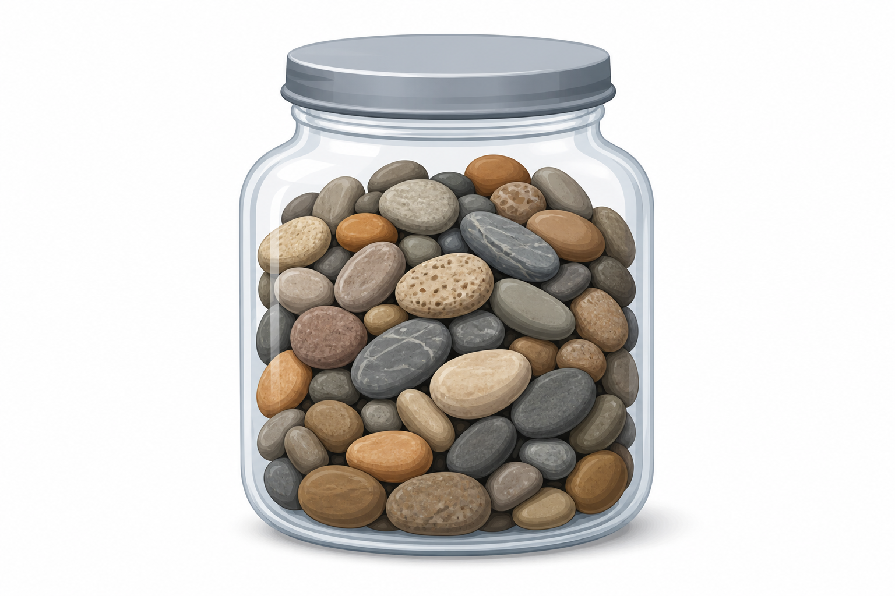

Project 5 — Jar Weigher (prototype)
Test page for the stone-jar data-collection widget.
Stone jar weigher (prototype)
This is a prototype test page for the Project 5 data-collection tool. The jar below holds a fixed collection of stones whose individual weights are hidden. Enter how many stones you want to scoop, then click Weigh to see the total weight of a fresh random sample of that many stones (the empty container plus lid is included in every reading).
Record each (number, total_weight) pair by hand as you go. Later you will organize your readings into a spreadsheet, save it as a .csv, and upload it to Colab for analysis, just like collecting and tidying real data.

The widget calls a Supabase weigh(n) RPC that samples a hidden weights table server-side. The project URL and anon public key are configured. The anon key is safe to embed publicly; the stone weights stay hidden because Row Level Security blocks reading the table directly, and only the weigh() function (which returns just a total) is callable.